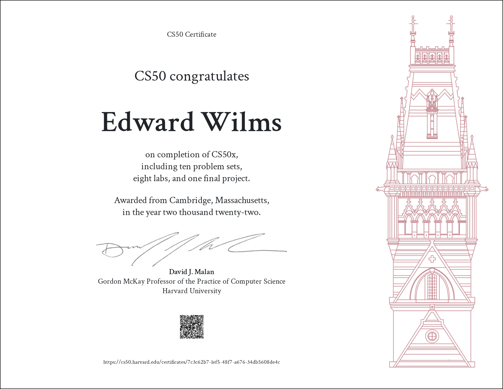
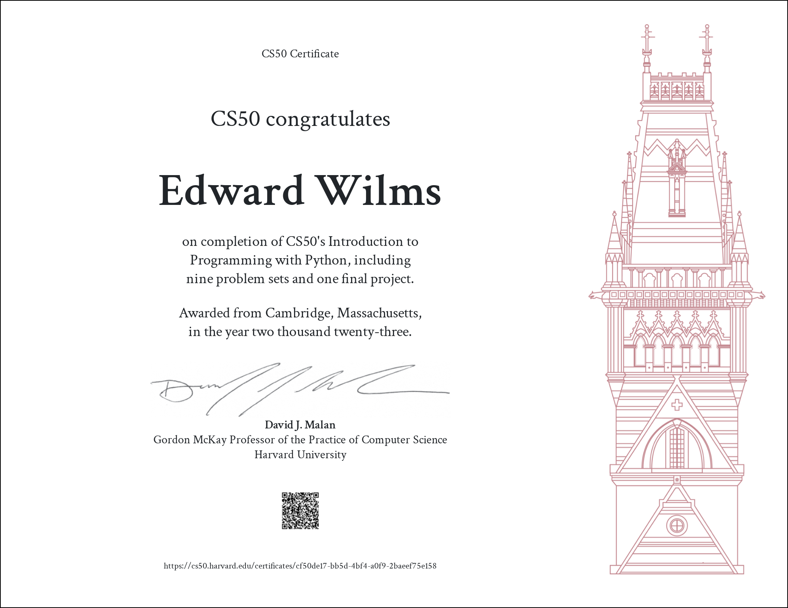
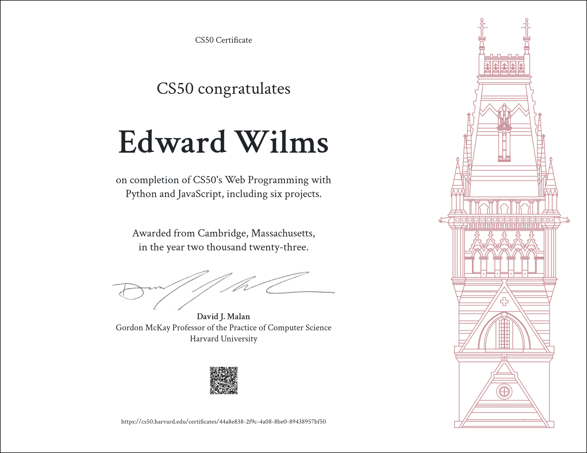

Welcome to My Certificates Page
Here, you'll find a collection of certifications earned through rigorous study, hands-on projects, and dedication to mastering new skills.
Each certificate represents a milestone in my career, showcasing expertise in various domains, technologies, and methodologies. From programming languages and frameworks to project management and data analysis, these certificates reflect commitment to staying abreast of industry trends and best practices.
Browse through the certificates below to gain insight into my diverse skill set and the breadth of knowledge. Whether you're interested in web development, data science, or software engineering, you'll find evidence of dedication to excellence and pursuit of growth.
My Certificates

CS50X - Introduction to Computer Science
The course covers problem-solving techniques, computational thinking, algorithms, data structures, and more. It starts with C, delving into computer architecture, memory management, and basic programming concepts. Later, it transitions to Python, SQL, HTML, CSS, and JavaScript for web and mobile app development. The course culminates in a final project, empowering students to apply their newfound skills in real-world scenarios.

CS50P - Introduction to Programming with Python
This course introduces programming through Python, focusing on practical skills and problem-solving techniques. The curriculum covers reading and writing code, testing, and debugging. It delves into fundamental concepts such as functions, variables, conditionals, loops, and data types. Covers learning to handle exceptions, debug code, and write unit tests, as well as utilize third-party libraries and regular expressions. Through hands-on exercises and real-world examples, students gain ample practice and insight into programming.

CS50W - Web Programming with Python and JavaScript
This course delves deeper into the intricacies of web application development. Using Python, JavaScript, and SQL alongside frameworks such as Django, React, and Bootstrap, students explore advanced topics including database design, scalability, security, and user experience. Through immersive projects, participants gain practical experience in writing and utilizing APIs, crafting interactive user interfaces, and harnessing cloud services like GitHub and Heroku. Students emerge equipped with the expertise and skills necessary to design and deploy sophisticated web applications on the Internet.

{kind=link}
{kind=link}
{kind=link}